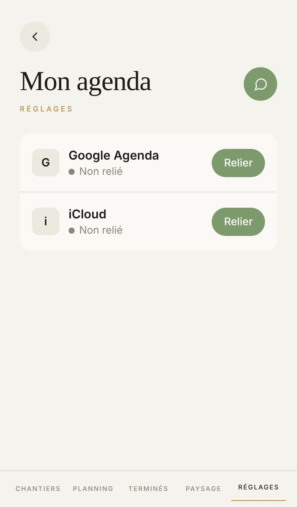

Proposé
Aujourd'hui

Ce qui change
- Chaque agenda dit son état en couleur et en mots : vert Relié, rouge Ne se lit plus, gris Non relié ou En pause. Touchez « Une panne ».
- Les initiales G et i prennent le doré de l'appli, les noms la serif des titres.
- Les deux boutons verts pleins deviennent cernés d'or : Relier se voit sans écraser l'écran. Gérer est cerné de gris, quand tout va bien.
- Relier iCloud : les trois étapes chez Apple sont numérotées, à la place d'une phrase à deux « puis ».
- Débrancher se confirme sur une plage rouge, avec un bouton rouge, comme la suppression d'un client.
- Le retour de Google se pose sur une plage verte, en haut : touchez Relier sur « Rien de relié ».
Ce qui ne bouge pas
- Google d'abord, iCloud dessous, et aucune phrase d'explication : sa planche du 26 septembre.
- La panne se voit sur la ligne. L'avertissement d'iCloud reste au-dessus du mot de passe, sur une plage ambre.
- Écrire dans iCloud reste un interrupteur éteint, et le calendrier ne se choisit qu'une fois allumé : touchez Gérer sur « Les deux reliés ». Quand iCloud refuse un chantier, « Le dernier chantier n'a pas pu être écrit. » s'écrit en rouge sous les interrupteurs.
- Les autres retours de Google gardent leurs mots (« Annulé chez Google. Rien n'a changé. », « Google a refusé… »), en rouge. Une installation sans identifiants Google fait d'abord remplir leurs trois cases, comme aujourd'hui.
- Le mot « Intégrations » ne revient pas. Un salarié qui tape l'adresse lit à qui la page appartient.